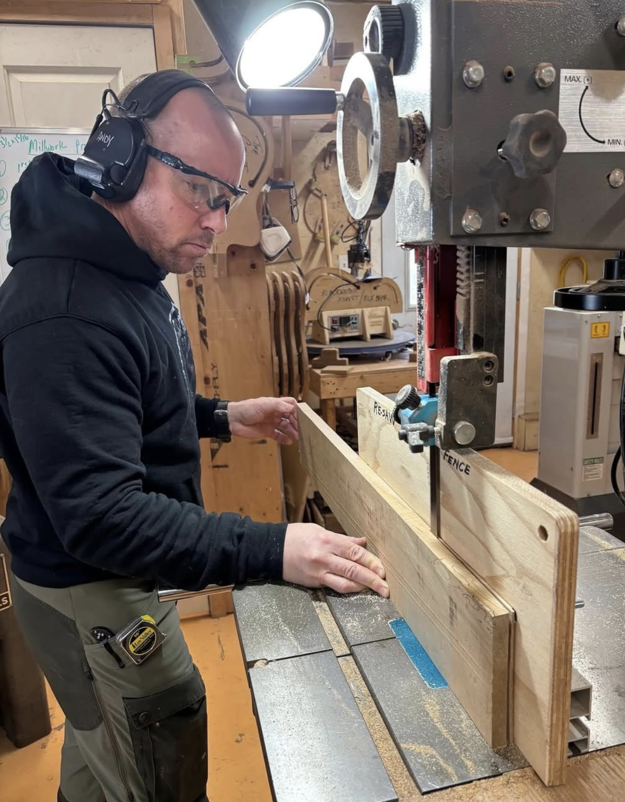
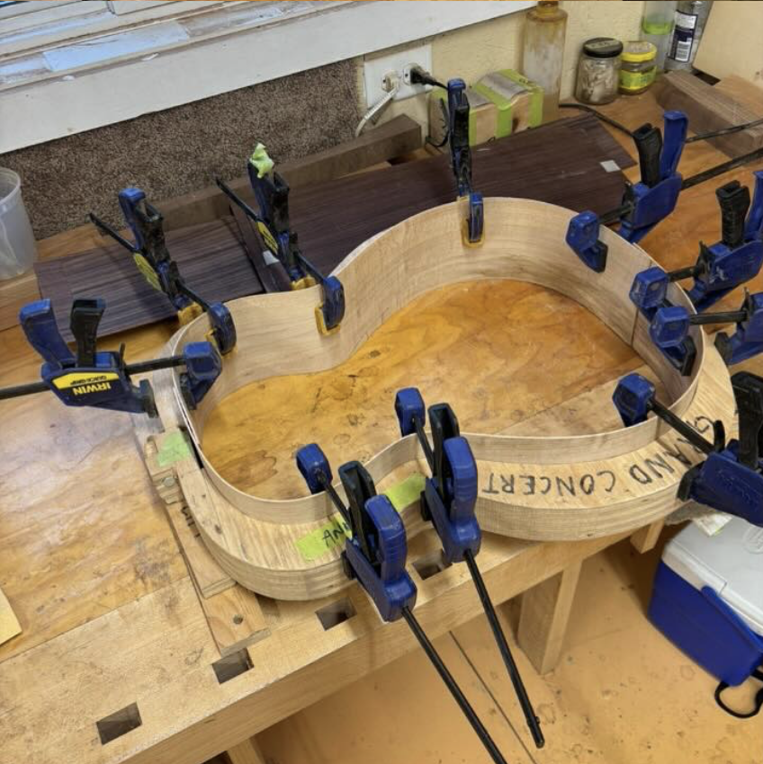
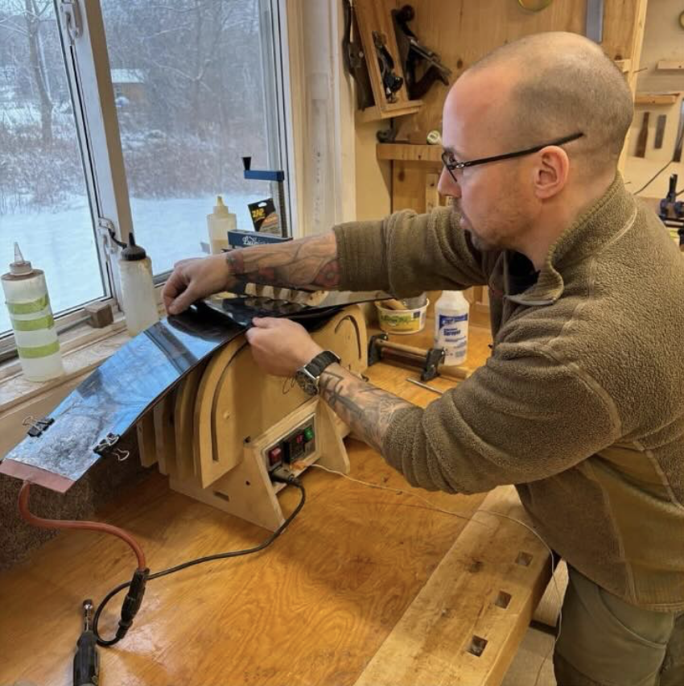
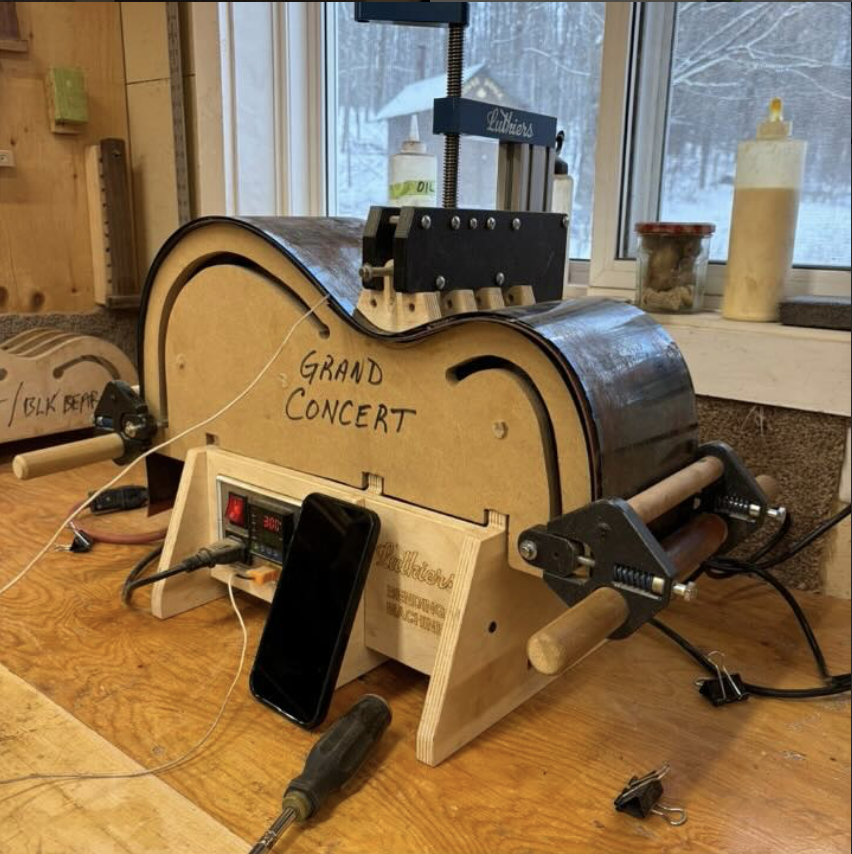
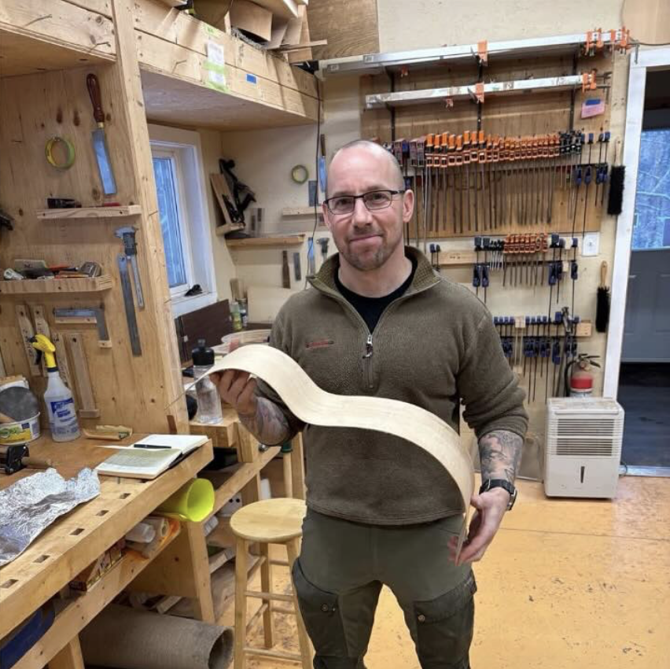
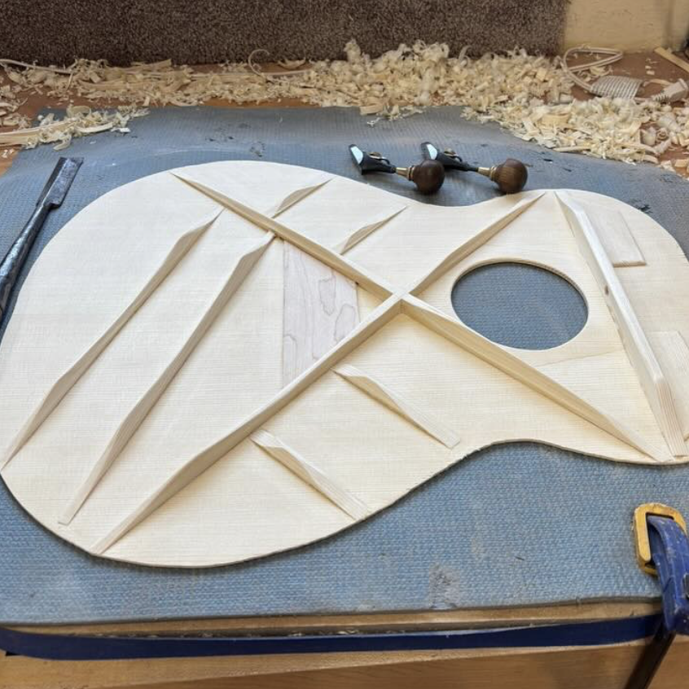
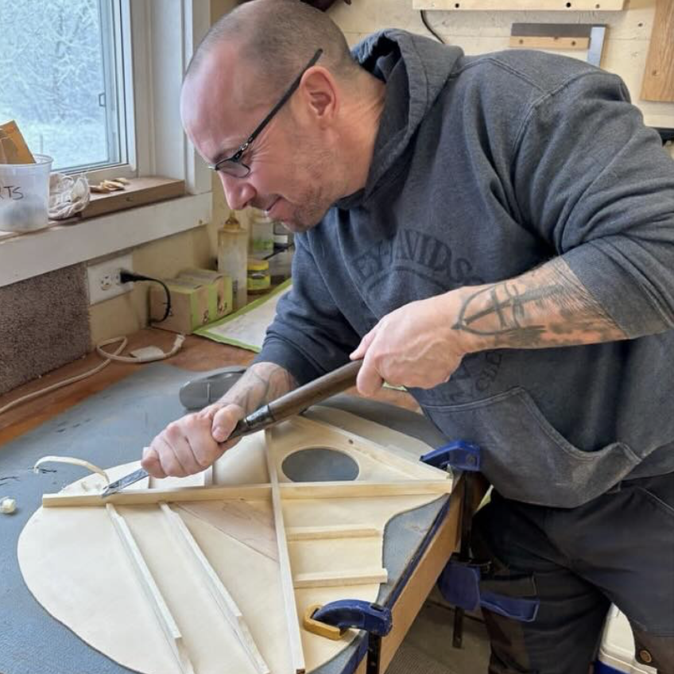

Return to Home Page

January 6, 2025. Wood working basics, hand tool use and sharpening wood.

January 12, 2025. Clamps holding the inner side veneer in shape.

January 15, 2025. Andy side bending the inner veneer.

January 15, 2025. Learning how to side bend the inner veneer.

January 23, 2025. Andy holding the finished, bent, inner side veneer.

Feb 4, 2025. Tuning the soundboard.

Feb 4, 2025. Andy tuning the soundboard (back of guitar).